◊MICROBLOG
a spur-of-the-moment thoughts dump, labeled month-day-year. ★'d entries are longer.

4-7-25
doing a sims run with the PTC cast this is how it's going with archer
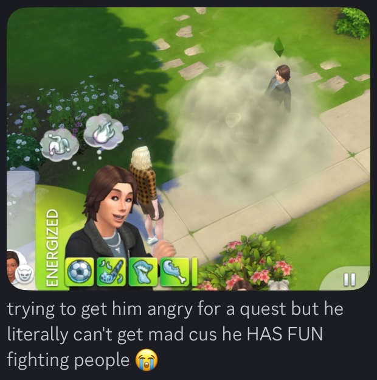 * quest = aspiration x-x7-7-25 | complaining abt twitter for several paragraphs and i do not even quit
i know twitter has always been bad but has it just gotten immeasurably worse since march for anyone else??? like no matter the circles i engaged with in the past, i would always be recommended content on the FYP equivalent to what i ALREADY engaged with - but as of late, the algorithm has been jack shit: random movie clips, fight clips, the same skits and stunts reposted by gimmicks accounts over and over, and edtwt?????????? huh???????????????? since when have i EVER engaged with that side of twitter?????????????? obviously i've experienced this before but it's never been THIS bad- i've never had the algorithm pivot so strongly to favor rage bait, it's so frustrating. i have only ever joined twitter to follow and get updates on my favorite artists and indie projects and it's only 30% of what i find on my tl now.
it's even worse because you USED to be able to see whether you were recommended certain content because a mutual liked it... but then a certain someone removed that feature, so now i genuinely can't tell if the algorithm is fucked up or if someone i follow/someone who follows me is fucked up. clicking "not interested in this post" doesn't even do anything. i've had to block so many accounts ON SIGHT as of late and i've NEVERRR had to go on block-sprees in all my years on twt up until this month, neverrrrrr. not that blocking is particularly strong or useful anymore. alright so... isn't the point of blocking to create a safety barrier between you and the undesired person? then tell me who thought it was a good idea for accounts i blocked to still be able to message me? who thought it was a good idea for accounts i blocked to still be able to view what i post? what is the point of blocking someone if they can still get to you????? what>?????
urkkkk and the weird ads too -- you used to be able to block accounts and they never show up again, but it seems like there is no end to the same genre of MAGA bootlickers showing up against my will in paid ad spaces and i can't even do anything about it. like, okayyy whatever, social platforms can have their political biases, but i should AT THE VERY LEAST be able to customize my experience. this is not something i should have to pay money to get rid of. if we wanna swing the other way, bluesky is wildly liberal and i can still click "not interested" and it ACTUALLY WORKS. i ACTUALLY don't see it anymore. maybe another website CAN TAKE SOME NOTES.
also don't get me started on bots
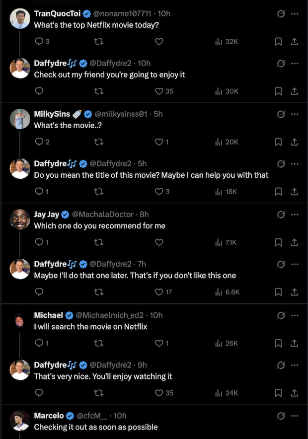 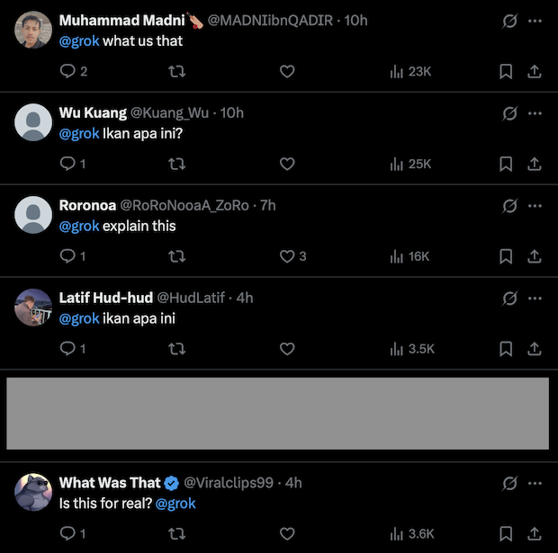^ those are the top replies in a single tweet btw. genuinely unusable platform.
it reaaaally sucks. i would have quit entirely were it not for that 30% of artwork and projects updates on my tl that i still stick around for. sucks that after the initial bluesky migration, very few people actually stuck to it and kept using it. most ppl i know gave up and went back to twitter since it is still the larger social platform and their work would reach more people there. people are OBLIGATED to stay not even because of the quality of the app but because of its associated reach. which sucks ass. it's the reason i still stick around despite all of the above. i have highkey been contemplating it though but if i go thru with it it's goodbye to all of my art inspos aughhhh is it worth it man is it even worth it is it even
3-14-25
i need to create more complicated OCs in their mid 20s for me to obsess over. enzo castor cannot be my only dressup doll that's far too embarrassing
3-11-25 | kane pixels' the oldest view
the oldest view isn't scary to me but it makes me feel warm and fuzzy inside. i remember near the end of highschool all my favorite childhood hangout spots closing down, and the mall being the last one to go. by chance, i stopped by a month-ish before its closing and seeing it virtually empty was such a unique sinking feeling. i based my AP art portfolio based off similar feelings at the time. "life of a giant" produced such a reassuring feeling ackkk,, he is a friend to me idc.
3-4-25 | art summary 2024
oh yeah it's a new year, how fun. kinda forgot about this

1-26-25 | the 'project eden's garden' ch1 viewing experience
MAJOR SPOILERS UNDER THE CUT.
eva opinions
what eva tsunaka does to a mf
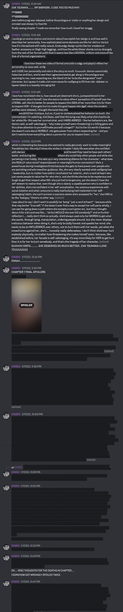i cant believe i typed paragraphs upon paragraphs analyzing this character and explaining why she would not kill anyone, only for her to kill somebody in the first fucking chapter i cannot believe it. auuughhhh my shayla............. i fucking miss wolfgang too. i cannot believe this is the outcome. im clutching wenona tightly to me rn. nothing better happen to her next chapter istg. ISTG.... im so sad guys im so sadd.
i really do love her character writing, it's rare i see such a complex and fleshed out first culprit in these kinds of games, and especially rare to see such an extensive exploration of how bullying and isolation can cause dysfunctionally. so often we see a perfect victim in fiction and yet eva is so nuanced. even though she is clearly a capable person who is arrogant in her abilities, she's not confident in her self-actualization. her previous experiences with social isolation and bullying had implanted in her self-sabotaging habits and both a searing superiority complex AND victim complex, one where she deserves sooo much yet cannot possibly grow because something is always in the way. where no matter if someone is nice to her, she comes up with a reason why they really aren't. she tries to be intimidating, she lies and isolates herself, and then chastises the others when they're mean to her after the "mathlete" reveal, when in reality, the shock of the lie is what caused their distrust, not her talent itself. nobody would have given a fuck if she'd just been genuine from the start AND YET SHE DOESN'T REALIZE THIS. she does all of these mental gymnastics and self-sabotaging because she EXPECTS hatred as a DEFAULT- she doesn't give herself a chance to even TRY. it was only FOUR DAYS into the killing game yet it was already far too much for her. it's easier for her to antagonize herself, to kill, because she EXPECTS no way out. the tragedy of her death is that she did it to herself. it's sad that her life wasn't easy, it's sad that she never got a chance to grow, it's sad that the others were at fault for antagonizing her, and it's sad that she is also at fault for how she ended up as a culprit.
I FUCKING MISS HERRR I MISS HER SO MUCH
on a lighter note, i was "spoiled"
crazy happenings in this viewing experience: i got wrongly spoiled TWICE. i accidentally scrolled down into the comments section of the daily life video and in the corner of my vision, i saw a comment tht said: "it makes sense that W[...] was the first one to die" and i only saw the letter "W" and was SO SO pissed off because i thought i'd been spoiled and that WENONA was gonna die. in my rage i forgot that wolfgang existed. so when the body reveal cinematic happened, i was SO SHOCKED. FLABBERGASTED OUT OF MY MIND THAT IT WAS WOLFGANG FUCKING AKIRE. i had to scream and pace around my room, i cant describe the raw emotion i felt in that moment. considering his behavior in the prologue, i expected him to die the LEAST out of all the cast. top 10 fangan moments. im still so so giddy over this twist.
AND THEN- YEAH? AND THEN? i was scrolling on twitter and saw an unspoilered video of diana's speech"- AND I THOUGHT THAT DIANA KILLED WOLFGANG AND THAT SPEECH WAS HER CONFESSION. but NO. when she was built up as a red herring during the trial, i thought it was already over- that's it- she killed him. AND THEN IT CONTINUED FOR ANOTHER 4 HOURS. AND EVA WAS THE REAL KILLER. WHAT THE FUCKKKKKKKK.......... THE MOST INSANE WHIPLASH OF EMOTIONS DURING A SINGLE FANGAN CHAPTER I'VE EVER EXPERIENCED. I WISH I'D LIVE-BLOGGED IT.
wolfgang opinions
it's really interesting how vastly my opinions on wolfgang flipped from ch0 to ch1 lol. i thought he was rly charming and interesting up until he crashed out at the mock trial and then suddenly i lost all interest. this line of thinking continued until he died in ch1 and the shock of his death suddenly made me love him again. and then when the flashback happened and we saw him disheveled stumbling and sobbing he shot up like 3 ranks higher in the tier list LMFAOOOOOOOOOOOOOOOOOOOOOOO
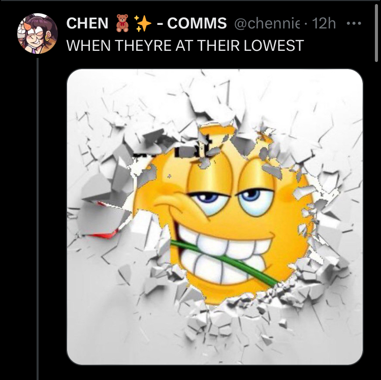jokes aside, i unironically adore his character. a hook has been cast. even though his backstory has already been implied thru his FTEs and envelope, i feel like there is still much complexity to him that hasn't yet been revealed. i think he's a fascinating character. his inclination to be morally correct in order to chase the legacy of his mother, despite having (what i think is) the temper of his father? UGH IT'S PEAK. i feel so very sad for him. the way both him, eva, AND damon all share the same complicated struggle of diluted self-image and the need to prove themselves. somebody hold me back im about to CRASH OUT. the three of them deserved to live and work out their differences and all be buddies man IM GONNA CRASH OUT.
opinions on damon
i think damon is SUCH a refreshing MC, how despite the subversion of having an "asshole MC" that he isn't edgy or one-note at all.
his identity is directly intertwined with being a debater- it's his ace and his defining quality which he wants others to see him for soooo BAD. he's spent so long trying to prove himself that when he encounters those with non-academic talents, it makes sense he'd be dismissive and rude, which, bummer. but when someone DOES come along with accolades that align with his standards he is SOOO fucking intimated LOLLL. he clearly is capable of respect and admiration yet his ego often gets in the way. he thinks he's being cool and stoic and confident and yet EVERYBODY CLOCKS HIM as NOT that, IT'S SO FUNNY. toshiko gives him a cute nickname, ingrid babies him, cassidy pokes fun at him, kai looks to him for safety. HE'S SUCH A DORK LOLL. i think he's very interesting and i enjoy the dichotomy he brings, where despite his rudeness, it never comes across as "too much" imo. i actually find it really easy to root for him
misc opinions
it's very easy to say that killing off wolfgang and eva is "wasted potential" - for like a week after my watchthrough i thought the exact same thing. i watched thru both the prologue and ch1 again recently though and it kinda made me realize that a lottt of that perceived potential was me trying to see FAR too much into the future. i was aware of the meta - of the DR format and i EXPECTED wolfgang and eva to be the designated rival and ally. it felt like all the conflict that was built up for 2 chapters, establishing cornerstones of conflicts thought to be overarching, had just been discarded and slammed closed in my face. now tho, i think that this feeling is nowhere the fault of the writing or narrative setup - it's simply cuz the i knew the DR format. while it makes sense to be disappointed by the outcome, these twists it weren't as cruel and door-slam-y as i initially perceived. and the longer i think about it, the more it makes me unbearably curious what the crew will do for ch2. i'll admit i don't like the idea of diana as an antagonist to damon, and i hope that she'll grow on me more. it's too simple really, but i know not to underestimate the writers so i'll hold the rest of my thoughts.
OK. narrative decisions aside... who are my OTHER favorite characters because my OG favorites just fucking killed each other? i think right now, it goes: (1) damon, (2) ulysses, (2) wenona
ooughhhhhh i reaaaaaally like ulysses. despite him being one of the more gimmick-y characters imo, i think all of his little oddities combined makes him a very endearing yet fascinating character. like. goodness gracious i love this insomniac conspiratorial chronically ill forgetful history nerd. i truly wish his FTEs were more interesting, it was only until the final 2 that we finally got something opinionated - i want to know more about his fear of death and his conspiracies about the world nearing collapse. as a historian, surly he is hyper-aware of old patterns reeling their heads - how does this play into how he uses his ultimate? how desperately he stays diligent in his work at the cost of his health? ughhhhhhhhh i initially didn't like him all that much but ch1 made me grow on him sooo much.
as for wenona, i have always loved confident, wry, self-assured women characters. there is something about the businesswoman archetype as well that just gets me so giddy. i loved reading through wenona's FTEs, she has such an interesting and engaging life and listening to her walk thru her past decisions and how she views her clan is so curious. especially considering her imitation/echo arts, i wonder if she betrayed them in some way? it's VERY likely that she's a much worse person than we've seen so far (also considering "unions" is one of her dislikes LOL) and i cannot WAIT to see what the team does with her and i. i actually can't take it man i want to see more of her AUUUGHHH I WANNA KNOW MORE. it's kILLING ME LET ME INNN LET ME INNN.
additionally, given that wenona is sharing ulysses' spot as my current favorite (u cant make me choose), i am naturally a ulywen shipper ahaha~ *GETS SHOT* *GETS SHOT* *GETS SHOT* *GETS SHOT* *GETS SHOT*
here is my general character ranking
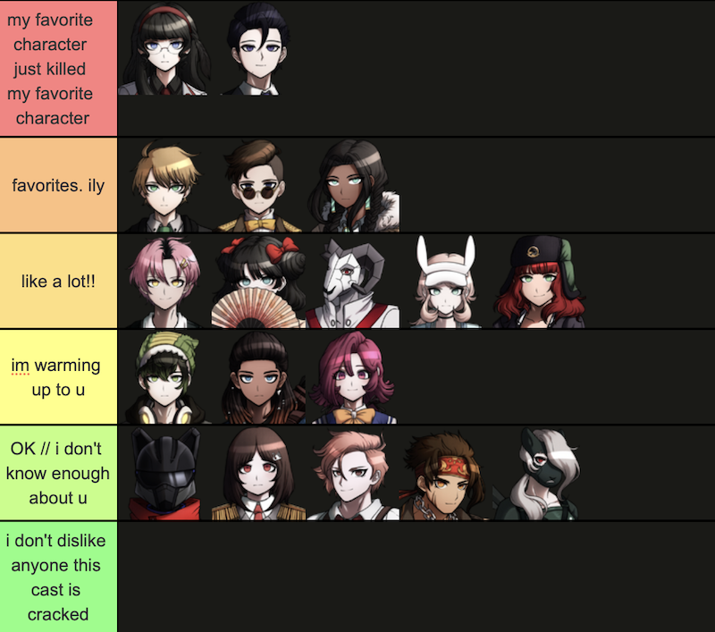ok that's it, good bye
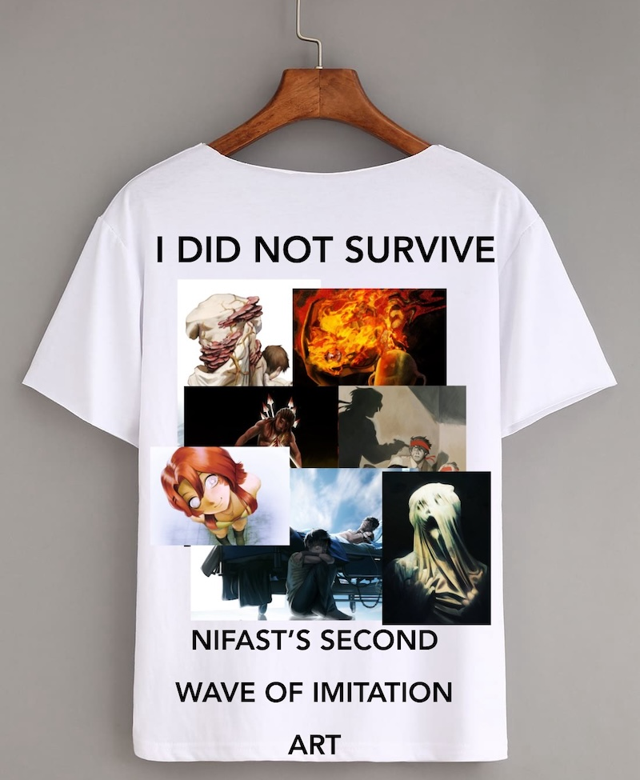1-25-25 | isra lol
The scene where Spamton goes limp and dies after celebrating his freedom has done such irreparable damage to my psyche I made a whole character based off of it
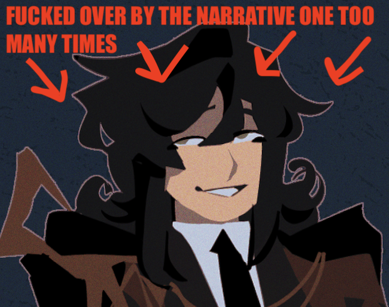1-20-25
found these old screenshots lollll. writing alt text is so unserious sometimes
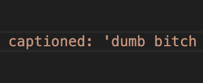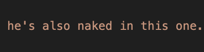
12-8-24 | study music
i've started getting into house/garage dj sets lately. it became rly nice music to put in the background when i was studying for finals, nice variety but still not so overwhelming that u can't focus. they r usually very chill but not as drab as a lotta the lofi beats i used to try to listen to. this set by pixels has been my favorite lately. i would embed it but the widget is botched as hell.
12-?-24 | reminiscing on the evils again
sometimes as a creative u kinda jus realize that the reason a project nvr came thru isnt bc of perfectionism or scope creep or anything u said but just cuz the idea just wasn't that great and ur just meant to contend w that. i am talking only abt myself
11-19-24 | archival of old art
i want to practice what i preach, and what i constantly preach is the archival of one's old artwork no matter how cringe or awful because it meant something to you once and is a marker of how far you've come. but oh BOY oh BOYYY is it hard to live by those words. a completely harmless story from 2022 has been haunting me since i've posted it and i RESIST the EVIL URGE to delete it off both the internet and my hard drive at all times. i used to lament about why some artists release their work and then never interact with it again or even resist engagement in its discussion like they never wanna see it again. OK WELL I GET IT NOW. HAVE MERCYYYY.
no one even knows what i am talking about, this is just someshit i carry on my heart and soul and i don't purge it out of PRIDE. it is AWFUL to me and me alone but those who know deserve to look at it still and deserve to have it too. (i say, crumpled in the fetal position)
11-17-24 | july-november media log
i took in a lot of artwork i felt hit very hard these few months, i wanna share em and my opinions on em. this is a compilation of thoughts i've written down over the months.
danganronpa: despair time (trial 2) - webseries
at the start, i felt very "meh" about it, and that feeling persisted all thru the trial UNTIL the final 2 episodes. then it all clicked and i felt like all of that buildup was WORTH IT. I GET IT NOWW. that was the best ending to a trial i've ever seen for a fangan - the only other one that is even comparable to this feeling of utter horror i felt is the ending to SDRA2 ch.5...... i know there was a lot of divisive discussion about who would've been the better blackened for trial 2 among the final 2 contenders, but the way this trial concluded has me convinced this is how it had to be. i loved this outcome and felt the execution was both fitting and surprisingly respectful. like. way to address a character's core flaw and challenge it so intensely. i still don't understand or like david though. shocker. i felt a little confused when he suddenly became a fan-favorite after his mask slipped this chapter. he still has a lot to answer for, and the fact that a lot of viewers started hearing him out cuz he pulled this "i suddenly care about xander now" thing is.... i don't know. i'm aware he knows what teruko's REAL secret is and that's partly why he started to defend xander: cuz he knows something now.. but i still can't find myself liking him or being interested in him, after all of his escalations and manipulations i think he's just over-the-top. idk idk i might just need to rewatch ch.2 again.
also i literally just realized this but like. is monoTV's default-setting voice fucking teruko's voice. dawg......
SCP-8980 - short story
(10-16-24) just read SCP-8980 and it is SUCH an engaging and unnerving dissection of systematic abuse. not even a thirds of the way in and I could TELL where the author probably pulled their inspo from in their real life and it is just awfully relatable and dreadful. the story is packed with such gravity, makes you feel such anger and leaves you endlessly dissatisfied and empty. the amnesiac scene. fucking hell. tldr; what the complete eradication of autonomy and identity does to a mf. i feel a connection to this one like no other.
mouthwashing - videogame
everything's better on the second run. my favorite thing about this game is how complex and layered all of the characters feel, despite the relatively short runtime and the jittery non-linear storytelling, i felt like i'd known them for much longer. all of my feelings boil down to "holy shit i feel awful for everyone involved." except that one guy ofc. i didn't necessarily feel horror or fear, just an overarching feeling of disbelief that kept getting stacked and stacked. very compelling story.
RIBBIT - deltarune mod
i want to write a much longer dissection and analysis of this mod because WOW. it has been so long since i've become THIS fixated on a story before. i wasn't aware that the mod would "get darker" - i just went into it thinking it was a comedy mod and was THRILLED and completely captivated when it began its heel turn. i know some people were turned off by it, but i thought the shift in tone enhanced what came before it and marked an iconic sort of uniqueness away from any other mod. i don't think it was as dark as others have described: there is, i think, fitting amounts of consequence and fitting amounts hope granted to the main 3.
i do think that a lot of the worldbuilding could have been condensed. the gift, the mothers, manos, the wishes-- it is so very difficult to understand on 1st playthrough. while it does give replays a lot more value, there is the extra dilemma of the lore documents saying things that are so out of nowhere and destructive to the dark world we thought we knew... that i really fail to understand why they were included. i 100% get there is a bigger picture and also a hyper-specific vision that the author has. i can try to grasp it as much as i want but i don't think i'll ever be able to get all of it. ig the mystery is the fun of it, but tbh i find more fun and value out of creating my own headcanons rather than trying to decipher existing lore. that's not a completely bad thing btw.
because despite the deeper story being inaccessible imo, the fact that the author still managed to create a world so vibrant and engaging, and characters you want to root for no matter what, and a world that even if not understandable, i STILL want to engage with on my own terms? that is a VERY GOOD thing. it's rly hard for a complex story to not be boring, and this one certainly isn't. there's a also lot of mixed opinions i have about the ambiguity of control for everyone effected by manos and what it even means. but i wanna save that for another time.
TLDR; i ADORE the story and characters, but at times anything deeper than surface level makes my head spin LOL.
crocodile complex - comic
the story is written in a way where both leads' words and actions are completely understandable and it's just kind of devastating to see anyways. there is just a looming atmosphere of sinking, of quiet waiting that always leaves you on edge. the very scratchy and texture-filled artwork helps with this immensely, man i fuckn adore the artwork. one of the more interesting comics i've read in a while.
come and see - film
(9-27-24) watched “come and see” last night bc I saw a video essay praising its cinematography and I just ended up depressed instead. much to think about. movies about the ruining of innocence and loss of humanity i love you. i actually can’t stop thinking about it and NOT in a good way
parkour civilization - webseries (THIS ONE IS VERY LONG LOL. also i'm a seawatt apologist and BIASED AF)
okay you could argue with validity that i'm reading far too much into a nonsense minecraft RP, but let it be known that i am an ex-DSMP fan and it will forever be ingrained in my nature. i HAVE to. anyways.
i feel so bad for seawatt in season 2, he was the victim of a conflict between his leaders that neither him and his people were ever going to survive. the system that he had trusted left him with nothing, and in the end, he is the only one burdened with this knowledge as the endling of his realm. he sees everybody around him worshipping this status quo that he alone knows is screwed and yet he falls in line and uses it to serve himself nonetheless. his new false power leaves him detached, living in luxury. he may as well have stayed like that forever... until one day, some naïve bozo comes along and finally has the nerve to change the status quo... and does. but seawatt doesn't see evbo in a light of hope, instead, only a tool to avenge what he'd lost- his one chance to finally overthrow this system which has done him so wrong. so he tricks evbo, beginning the journey hating him, and in the end thinks of him fondly, but despite his efforts anyways, seawatt dies. the user becomes the used, and as thanks for freeing him, the parkour villain kills him. nothing had changed- he died as collateral to the problems of champions, the same as the rest of the 5th layer all those years ago. and in the end, evbo will escape and defeat the villain, save parkour civilization... but there is NO mention of the 5th layer in the ending sequence at all - the 5th layer presumably remains hidden and it's unknown if seawatt's people see any justice
there is something to be said as well, as to how easily it is for the elites to rewrite history on a whim. neither the parkour villain or the old man face repercussions for what they've done - they simply get the peace of death. and it's arguable the old man obviously regretted sealing off the 5th layer/killing everyone, but it was such a drastic measure to keep just ONE person away. if your control over a populous is so fickle that you have to erase an entire civilization to keep its knowledge under your power, then you were not a good leader to begin with. perhaps this is why the old man falls into the void after giving evbo the key in the 1st movie, maybe its why he hides the fact he's close to death when evbo becomes champion... he feels so much guilt that he doesn't even want a place in parkour civilization- he knows he doesn't deserve it. yet still, he keeps all of his actions a secret from the NEW champion who HE guided to power until he was on his deathbed. evbo has to discover it all himself, and he in the process, hurts evbo and the rest of parkciv by leaving him clueless and prime to be manipulated... which seawatt and the parkour villain take advantage of. if the old man hadn't been a coward then maybe the parkour villain wouldn't have even been freed again, maybe even MORE people wouldn't have needed to die for his mistakes.
one thing i don't necessarily like abt season 2 is the fact much of the good guys' actions were justified under the guise of "there was no other way" because the parkour villain was simply an even bigger bad that needed to be contained. it is still a very entertaining movie though and i did enjoy watching it. but imo season 1 is an S-tier and season 2 is a B-tier. PVP civilization is on my watchlist.
11-15-24 | on the jul-nov art batch
whenever i feel embarrassed about new artwork in one of my batches i have to remember this over and over and over
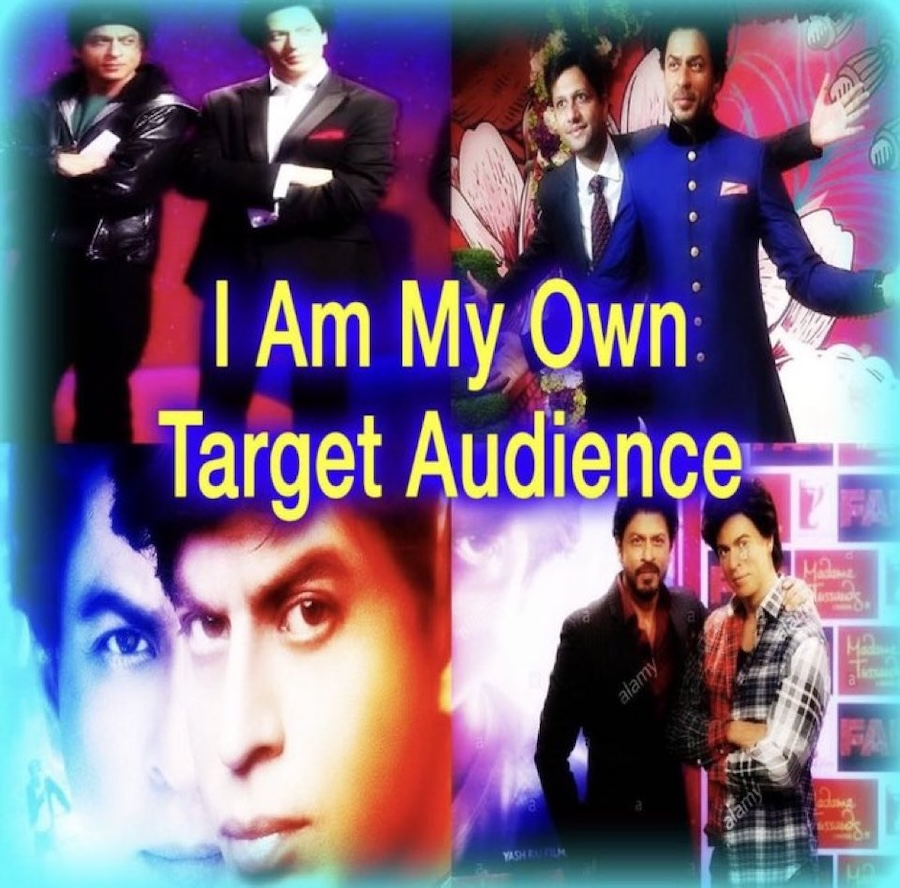i do NAWT want to hold myself back. sucks when i love smthn visually but the subject matter potentially takes away from feeling like i can share it. im sayin all of this but the artwork in question is not revealing in the SLIGHTEST 😭 im ALWAYS dramatic abt this shit. i need to get FREAKIER.
10-10-24 | hashtag relatable
nothing as relatable to me as christian young using a better art program and then immediately getting withdrawls for mspaint. me too.
nothing as relatable to me as constellor of twitter dot com becoming unbearably attached to a one-off OC and then rapidly creating and re-making reference sheets because the design keeps changing as she draws them. me too man me too
nothing as relatable to me as how crumb cuptoast treats ethan winters of resident evil fame. haha. m. me t. me tt t
9-6-24
this week, i feel an incredible kinship with this video
9-5-24 | writing again
you ever read a nsfw fanfiction so beautiful that it inspires you to write again?
not write smut, i'm talking like regular sfw. anyways, that's happening with me rn. hi, i'm getting back into writing prose again. thank you authors of ao3, i owe this creative-writing rejuvenation to you. i don't even know what re-animator is.
on a more serious note, i've been stuck in a bit of a writing slump for around a year or two now and have recently and very suddenly leapt out of it. the journal entry from 5-24-24's just REEEEKS of that old frustration. dunno how long this motivation will last but for the first time in a very long time i'm having fun with writing again. amazing what the palpable love-of-the-game of another creator can do to a mf.
i feel like how i was at 15 years old doing her first nanowrimo: that is the speed at which i am pouring my guts out into this google doc. unfortunately, some things never change and i will never post 100% of what i am working on... just know that i'm on that GRIND. the grind for a prequel oneshot for marcene, isra, and callisto, abt how they all met and died and revived and allthat. i'll likely put out some related artwork instead when i'm finished. yippe!
a recent excerpt

it reeks of clunkiness and 1st draft-ness but it's one of a few favorite excerpts